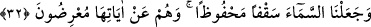

onunla dağlar yerinden sökülür. Ateş ise demire gâlib gelir. Su ateşi söndürür. Bulutlar
suyu taşır. Rüzgar, bulutları sürükler. İnsan da sebât ile rüzgara üstün gelir. Uyku, insana
gâlib gelir. Üzüntü de uykuya gâlib gelir. Ölüm ise bütün bunlara gâlib gelir.” diye
cevap verdi.
Fakir (Bursevî) şöyle der:
Dünyada ölüm gibi bir nesne yoktur
Aziz de olsan, padişah da olsan o sana galip gelir
et-Te’vîlâtü’n-Necmiyye’de şöyle der: Âyet yeryüzünün direkleri ve dağları olan
abdâllara işâret etmektedir. Yeryüzü halkı onların hürmetine rızıklandırılır, onların yüzü
suyu hürmetine yağmur yağdırılır. Abdâl, öyle bir topluluktur ki Allah yeryüzünü onlarla
ayakta tutar. Onlar yetmiş kişidir. Onların kırkı Şam’da, diğerleri de başka
yerlerdedirler. Onlardan birisi öldüğünde, mutlaka insanlardan birisi onun yerine ikâme
olunur.”
Bir hadiste şöyle buyrulmuştur: “Yeryüzü, Halilurrahman gibi kırk kişiden boş
olmaz. Siz, onlar sebebiyle sulanır, onlar hürmetine yardıma mazhar olursunuz.
Onlardan biri öldüğünde, Allah hemen onun yerine bir başkasını getirir.”[163]
“Orada” yerde ya da dağlarda “geniş geniş yollar açtık;” Celâleyn’de sâdece
dağlarda yollar açıldığı belirtilmiştir. Çünkü dağların yollara ihtiyacı vardır “ta ki
maksatlarına ulaşsınlar.” Onlar için uzak diyarlarda yarattığım maslahatlarına ve
mühim işlerine ulaşsınlar.
32. Biz, gökyüzünü korunmuş bir tavan gibi yaptık. Onlar ise, gökyüzünün
âyetlerinden yüz çevirirler.
“Biz, gökyüzünü” onu tutan herhangi bir direk olmadığı halde yıkılmaktan veya belli
bir vakte kadar bozulmaktan ve dağılıp parçalanmaktan ya da parlak alev ile kulak
hırsızlığı yapılmaktan (Bk. el-Hicr 15/18) “korunmuş bir tavan gibi yaptık.”
Gökyüzüne “tavan” denilmesi, yeryüzü için sanki bir tavan gibi olması sebebiyledir.
Burada işâret vardır ki ârifin kalb semâsı insan ve cin şeytanlarının vesvesesinden
korunmuştur. Nitekim Rasûlullah (s.a.)’in duâlarından birisi şöyleydi: “Allâh’ım,
kalbimi senin zikrinin fısıltısıyla îmâr et. Şeytanın vesveselerini benden
uzaklaştır.”[164] Nitekim Âkâmü’l-mercân’da böyle denilmektedir.
Mesnevî’de der ki:
Hakk’ı zikret, gulyabânîlerin sesini yak, bastır